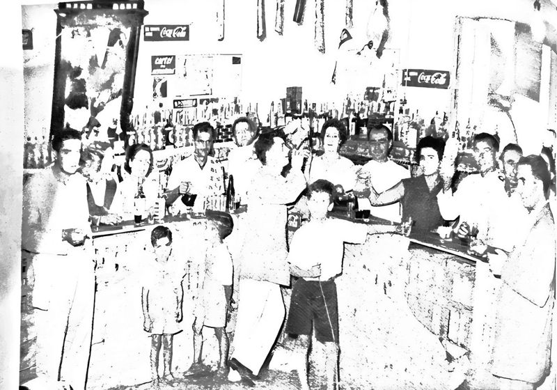
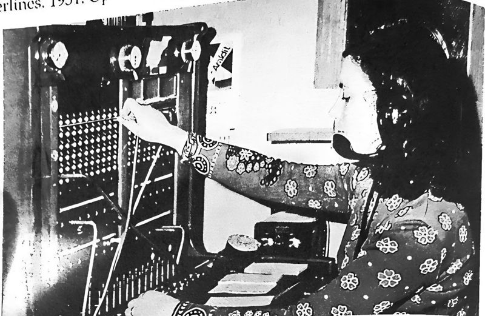
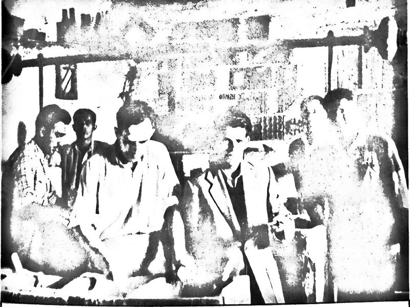

Comercios, oficios y servicios del siglo XX
Quién despachaba en las tiendas y tabernas, quién cortaba el pelo, hacía el pan, curaba o enseñaba en Alaejos entre 1901 y 2000. La relación que reunió Antonio Lucas Varela con ayuda de la quinta de 1950.
En Alaejos. Una antropología cultural (2024), Antonio Lucas Varela completó su repaso de los oficios perdidos con una relación de los establecimientos, bienes y servicios que hubo en Alaejos en el siglo XX y de quiénes los llevaban. La hizo con la quinta de 1950 y una docena de vecinos más, y advierte que, como en toda recopilación, «no están todos los que son ni son todos los que están». La reproducimos aquí ordenada como en el libro. Los oficios que desaparecieron, de la casitera al sereno, están en Oficios, agua y vida diaria, y los sindicatos y hermandades del campo en El Sindicato Agrícola y las sociedades.
El pueblo llegó a 3.725 habitantes hacia 1860 y desde entonces fue perdiendo población: 2.939 en 1960 y unos 1.550 en 2020, según Lucas. Las cifras de cada censo están en La población de Alaejos en datos.


Alcaldes
Entre paréntesis, el año en que empezó cada mandato. En 1936 hubo además un presidente de la comisión gestora municipal. La historia de esos años está en El siglo XX.
- Victorino Hernández Rodríguez (1901)
- Victorino Santana Castrejón (1901)
- Joaquín Alonso Caballero (1901)
- Alfonso Mela Samaniego (1902)
- Nicolás Martín Alonso (1908)
- Luis-Alejandro González Santana (1910)
- Gregorio Hernández Mangas (1914)
- Arturo Caballero González (1914)
- Nicolás Martín Alonso (1917)
- Pedro Viviano García (1921)
- Nicolás Martín Alonso (1922)
- Victoriano Nieto Santana (1923)
- Aurelio-Martín Hernández Monge (1924)
- Aureliano Alonso Marcos (1928)
- Valentín Martín Alonso (1929)
- Teodoro-Salvador Vadillo Buitrón (1929)
- Donato Vadillo Buitrón (1930)
- Felipe Alonso Medina (1931)
- Pedro Lucas Alonso (1933)
- César Martín Hernández (1933)
- Antonio Losada Martín (1936)
- César Martín Hernández (1936)
- Primitivo Baena Cuadrado (1936), presidente de la comisión gestora municipal
- Aurelio Morillo Martín (1940)
- Felipe Pérez González (1942)
- Simeón Lucas Alonso (1942)
- Agustín Alonso Portillo (1943)
- Donato Vadillo Buitrón (1945)
- Pedro-Abad Martín Santana (1955)
- Manuel Mangas García (1966)
- Adelio Castaño Casquero (1979)
- Emilio Frutos Monsalvo (1983)
- Armando Caballero Morante (1987)
- Emilio Frutos Monsalvo (1991)
- Javier Pérez Barba (1995)
- Cristina Aguado Lucas (1999)
- Carlos Mangas Nieto (2007)
De la A a la Z
- Abacerías
- Guillermo Baraja, Claudio Buitrón, Martín Frutos, Basilio Castrejón, Julián Guerras, Jesús Herrera, Macario Losa, Germán Pigazo Alonso, Clarita Pigazo, Petra Lucas Mediero (cartilla de racionamiento), Juanito Zahor, María la cacahuesera, Isidoro Salamanqués, Julio Lucas y Manuela, Pedro y Herminia Lucas, Ilumi Mangas y Hermán Salamanqués (tiendas de legumbres, bacalao, aceite, vinagre y otros géneros al por menor).
- Abrevaderos
- Lavajo de las Estapias, pozo del Arrabal, pozo del Cuartel, pozo del Lavajo Lugar, Caño de la Ontana.
- Academia
- Dirigida por Lorenzo Bernal y Carmen Megías, situada en la casa de los beneficiados de Santa María de la plaza Mayor.
- Abastecimiento de agua y saneamiento
- Acometida en 1967.
- Agente comercial
- Clodoaldo Vasco.
- Aguadores
- Miguel Carracedo (Tito), Joaquín Rodríguez.
- Alfarerías
- Victoriano Frutos, Bernardo Frutos, Vicente Frutos, Victorino Frutos, Andrés Frutos, Manuel García, Hilario Pérez, Santiago García, el Rufinillo, Modesto Frutos Barajas, Andrés Frutos Barajas, Fermín Felipe Rodríguez Ramos, el Camargo (sic).
- Alguaciles-carceleros
- Amalio Matilla, Galo Prieto (1922), Cruz Santillana de la Rocha, Teodosio Santana (Guiña), Abelardo Marcos Guerra, José Luis Pérez Muñoz. En 1904 tenían un sueldo anual de 410 pesetas.
- Almacén de semillas
- Severino Villa.
- Almacén de vinos
- Nicolás Martín, José Luis González.
- Alquiler de automóviles
- Pedro Antoraz, José Cerrón, Pedro García, José Puertas, Pedro Puertas, Antonio Álvarez, (padre e hijo), Antonio Lucas Lucas, Jesús Lucas Lucas, Genaro Losa, Carlos Losa, Tirso Valencia (Tito).
- Alumbrado público con petróleo (1887-1909)
- Arrendatarios: Jacobo Santana Alonso (1900-1902 se le abonaban 840 pesetas anuales), Mauricio García Alonso (1903), Martín García Berdote (1904, se le abonaron 1.500 pesetas), Cecilio Santana Alonso (1905-1906), Pedro Ramos Cesteros (1907-1908, se le abonaron 1.800 pesetas anuales), Saturnino Belloso Santana (1909) (el arrendatario ponía el petróleo de los 78 faroles, reponía tubos y mechas, los encendía al anochecer y los apagaba a las doce, o antes si había luna llena).
- Alumbrado público con electricidad (1909)
- Suministrado por Eduardo de Burgos Muñiz, Jorge Martín e hijos. El pueblo le dedicó una coplilla: «Ya tenemos, ya tenemos luz eléctrica / desde el día, desde el día dieciséis del actual / gracias a Eduardo que ha tenido el gusto / de proporcionarnos lo que era muy justo».
- Archivo lírico-dramático
- Joaquín Pardo (representante de la Sociedad de autores).
- Bancos
- Banco Central (Juan Antonio, director), Caja Provincial de Valladolid (Antonio Lucas Lucas, cajero), Banco de Santander (Pedro Morante, cajero), Caja Rural, Caja España, Banco Popular.
- Bares
- Flor (Mariano Rielo), Mi Casita de papel (Florencio Gómez), Moroco (Julián García), La Seba (María Pérez), la Perdiz (Antonio Bermejo), la Frontera (Donato Casado- Felipe García- Rafael Pérez), el 181 (Nani Bécares), Calero (Isidoro Díez), El Tubo (Germán y Felisa), el Arrabal (Marceliano y Elerinda), el Carmonero (José Bécares Hidalgo), el Callejón (Jesús Bermejo y Margarita), Carrasco (Ángel Carrasco).
- Barberías-peluquerías
- Luciano Buitrón, Florentino Santana, Francisco Carracedo, Isidro Díez, Isidro Hernández, Francisco Varela, Exuperio, Tirso Santana, Churruguera, Lorenzo Matilla, Pepe y Ciriaco Prieto.
- Báscula de pesaje
- Para carros y camiones. Instalada en 1956 y propiedad de la Hermandad de labradores.
- Biblioteca municipal
- Isabel Martín Sánchez (bibliotecaria).
- Billares
- Café bar Francisco Varela.
- Bordadoras
- Carmina, Lourdes Carracedo, Dolores Muñoz (Dolo).
- Boticas
- Francisco Buitrón, J.M. Moya, Felipe Perlines, Leopoldo Calderón. En 1904 el boticario recibía 1.000 pesetas anuales del Ayuntamiento.
- Buñolerías
- Pedro González, N. Galanes.
- Cabrerías
- Tomás Carrasco, Juan Hernández, Francisco Medina.
- Calderería
- Fidel García, Jesús García.
- Café-bar
- Gran Café Peña (Hilario Monsalvo) Café-bar el Ideal (Julián López e hijos) Café Varela (Francisco Varela y Juliana Calvo).
- Campo de fútbol
- En el prado de Carrealvar.
- Cantarera de vidriado
- Adelaida González (en Alaejos se decía «vidriau»).
- Cantinas, tabernas y tascas
- Isidora Benito, Teodoro Benito, Martín Frutos, Pedro Gallego, Gonzalo Pozo, Donato Navas, La Bombilla (Fermín Berdote), el Espanzao (Valentín Carrero), Francisco Losa, Macario Losa, viuda de Martín Losada, Ángel Lucas, viuda de Emilio Pérez, Tiburcio y Guillermo, Eusebio Casado y Manuela Aguado.
- Cañeros y cañeras
- Francisca Lucas y Lorenzo Muñoz, Deogracias González, José Luis González.
- Capador
- Millán Hernández (el mancebo).
- Carameleros y carameleras
- María Valencia, Asunción Domínguez, Genara Fonseca, Vicenta Fonseca y Epifanía Fonseca (las epis), Felisa, Consuelo Gallego y Nino Pozo, Casimiro.
- Carbonerías
- Ángel López, Gregorio Navas.
- Cárcel
- Localizada en la planta baja del Ayuntamiento. A cargo del alguacil-carcelero de turno.
- Cardadores (pelaires-peraires)
- Rosa Bécares.
- Carpintería mecánica
- Lorenzo Pérez, Julio González (el maquinista).
- Carpinteros, carreteros y ebanistas
- Luis Herrero, Emeterio Lucas, Bonifacio Parrado, Pedro Ramos, Demetrio Vázquez, Julio González, Lorenzo Pérez, Heliodoro Parrado, Manolo Baraja, Julio Lucas, Pedro Gallo Boada, Eloy Flores, José Montes.
- Carros de transporte
- Manuel Nieto, Juan Puertas, Antolín Santana, Fidel Santana.
- Casa cuartel de la Guardia Civil (1927)
- Desaparecida en 1990.
- Casa de los maestros
- Sin datos.
- Casa del médico y centro sanitario
- Construida en 1955.
- Casa parroquial de Santa María
- Construida pegada a la base de la torre, era el hogar del párroco. Tras el fallecimiento de Ausencio Pinilla, fue derruida a instancias de Patrimonio Nacional.
- Casillas de camineros
- Carretera de Castrejón. Isidoro Noreña, capataz, Onofre, capataz, Nicolás Cubero, conductor. Carretera de Castronuño (km.4) los hermanos: Julio, Florentino y Manuel Hernández Martínez.
- Casitera
- Petra García y su hija Victoriana.
- Centro comarcal de salud
- Localizado en el antiguo Hospital del Buen Pastor, en la plaza de Santa María. Año 1985.
- Ceramistas
- La Industrial de Mosaicos (Familia Ojeda García).
- Cereras
- Elena Belloso (Santa María), Andrea, Mercedes y Cipriana Castro (San Pedro).
- Cesteros
- Lorenzo Fonseca, Gregorio Fonseca, Claudio Fonseca, Andrés Ramos, Miguel Ramos, Félix Rodríguez.
- Churreros
- Avelina García, Luis González.
- Cinematógrafo
- Bernabé Ojeda (local), Miguel Hernández (empresario), Isidoro Aguilar (portero), Eufemio del Castillo (portero) Donato Casado (maquinista), Lorenzo Muñoz (acomodador).
- Club ciclista
- Fundado en 1995. José Ramón Lucas (presidente).
- Coche de línea
- Empresa la Regional vallisoletana S.A. Tiburcio (cobrador), Cándido (conductor), Avelino Holguín (conductor), Luis Montes (cobrador), Basilio Mangas Santana (cobrador).
- Cofradías de devoción
- San Blas, San Isidro, Santa Bárbara, Santa Águeda, San Antón, San Cristóbal, Santa Cecilia, Santísima Trinidad, La Purísima, la Virgen del Carmen, cofradía de los Pastores de la Virgen de la Casita, cofradía de Bailarines de la Virgen (daban culto a los catorce santos protectores).
- Cofradías penitenciales
- Oración del Huerto, Nuestro Padre Jesús Nazareno, Nuestra Señora de los Dolores, Ecce Homo, Nuestra Señora de la Soledad, la Caída, Santo Entierro, Cristo del Despojo (las que sacan sus pasos en Semana Santa) (llamaba la atención por la feroz imagen del sayón Barrona).
- Cogedoras de puntos de medias
- María Jesús Losa, Nieves Holguín, Vicenta y Epifanía Fonseca, Charito Santillana.
- Colchoneros vareadores
- Teodosio Vicente y Paula Buitrón, Luis García, Marcelino García, Eulogio Carracedo, Néstor Aguado y Leonisa García, Vicente Losa, Felipe García.
- Comisionistas
- V.H. Antoraz, Daniel Hernández Galán.
- Componedor
- Eulogio Carracedo, «el gobernador» (hombre bueno a quien las partes de un conflicto confiaban, sin pagar, una solución justa).
- Confiterías
- Antonio Bay, Paco Ámez e hijas: Natividad, Teresa, Azucena.
- Corresponsalías del El Norte de Castilla
- V.H. Antoraz, Daniel Hernández Galán, Pedro Morante, Germán Morante.
- Cortadores
- Gregorio del Valle, Vicenta del Valle, Julia Lucas Belloso, Elpidio Manjarrés, Amado Manjarrés, Faustino Berdote, Álvaro del Valle, Bonifacio del Valle, Lucio del Valle, Agustín del Valle, Paco González y Luciana del Castillo, Gregoria del Valle, Genaro del Valle (carniceros).
- Cosecheros
- Teodosio Caballero, Donato Vadillo, Aurelio Hernández, Nicolás Martín, Pedro Morante, Germán Morante, Inocencio Santana, Viuda de Arturo Caballero, Samuel Lucas Guerras, Samuel Lucas Martín, Julio Lucas Mediero, Gerónimo Mangas (productores de vino).
- Coto de caza
- Declarado en 1972.
- Cruz Roja
- Puesto inaugurado en 1982.
- Cuerpo de bomberos (1922-1930)
- Equipo formado por diez personas entre las cuales había técnicos en el manejo de la bomba y maestros albañiles. Práxedes Ojeda Baraja, León Viviano Puertas, Casimiro Beltrán Mangas, Pedro Gallego, Eustaquio Puertas, Benigno Aguado, Genaro Parrado, José Ojeda García, José gallego López, Justo Cesteros, Gabriel Losa Santana. El Cuerpo de Bomberos tenía una dotación anual de 1.000 pesetas de las que 750 eran para pagar al personal y 250 para materiales.
- Curanderos y curanderas
- Isidoro Salamanqués (el Sabio), Goyo Salamanqués, Valentina Santana, Angelita.
- Dentistas
- Abilio, Emilio Benito García-Lomas.
- Depósito de abonos
- Pedro Mangas, Jerónimo Nieto, Sindicato agrícola, Francisco García e hijos.
- Depósito de cervezas La Cruz Blanca
- Severiano Lozano Anta.
- Depósito municipal de agua
- Construido por Nicolás y Práxedes Ojeda para la acometida y distribución de agua en las casas. Año 1965.
- Distribución de gas butano
- 1960.
- Droguerías, mercerías y ferreterías
- Bazar Casita, Novedades Lusán, Casa Cesteros Benito, Severino Villa, Casa Lozano (Severiano Lozano), Novedades Zamora (Baldomero González, el Zamorano), Germán Pigazo Alonso, Clarita Pigazo, Daniel Hernández Galán, Paños de Sabadell (Aquilino Lucas Guerras), Leopoldo Calderón, Teodoro Benito, Claudio Santana, Pedro y Herminia Lucas, Valentín Rodríguez (Tinín) y Luis Losa.
- Electricistas
- Lorenzo Manjarrés, Julián Ramos, Germán Casado, Isaac Morera Salamanqués, Pedro Hernández Perlines.
- Empedradores
- Justo del Castillo, Eufemio del Castillo, Eulogio del Castillo, Práxedes del Castillo, Bonifacio del Castillo, Vicente del Castillo, Félix Caballero, Radis Aguado.
- Encargado de la bomba de incendios
- Previo a la creación del cuerpo de bomberos esta persona recibía en 1902 una asignación 50 pesetas año, en 1919 subió a 75 pesetas más 5 pesetas por cada incendio atendido.
- Enterradores
- Bernardino Guerras, Mariano Roncero, Salustiano Vega, Silvestre Caballero, Cecilio Vega.
- Ermitaño
- Petra García, Miguel Carracedo (Tito).
- Escribientes
- Evencio Díez García, Hermán Pérez Santana, Cándido González, Cipriano Baraja, Ana I. Crespo Martín (aux, adm.), Alfonso Santana Berdote (aux. adm.), Isidoro Hernández Nieto (aux. adm.).
- Escuelas de capillo
- Carmen Díaz, Manuela Prieto, Andrea Hernández (para niños que aún no tenían edad escolar; el capillo era el gorrito de punto que se ponía a los bebés para que no se les enfriara la mollera).
- Escuelas nacionales y graduadas de chicas (1931)
- Maestras: Pilar Lacalle Homedes, Jacoba Martín, Carmen Casas, Carmen Serrano, Mercedes Abril, Trinidad Mantilla, Conchita Lanchares, Mari Carmen Querol, Mercedes Romón, Juliana Amez, Adalia Sanpedro, Dª. Carmina González Cea, María Lucas Caballero, Encarna Lucas Caballero, Dª. Pilar Calzón, Elpidia Morante, Maruja Álvarez (implantadas en 1898, separaban a los niños por edades y grados).
- Escuelas nacionales y graduadas de chicos (1931)
- Maestros: Juan Estebaranz, Esteban Domínguez, José María Nieto, Manuel Vara Vara, César del Puerto, Tomás Romero Prieto, Vitorino Fernández, Adolfo Calvo Franco, Agustín Moreno, Fidel Lucas, Adelio Castaño, José María Aranda, Cecilio, Bonifacio Cesteros, Adrián.
- Esquilador
- Hilario Morales, Román Morales, Mauro Antón, Martín Morales.
- Estación de aprovisionamiento de gasolina
- Pedro Antoraz, Arturo Galván, Manuel Mangas, Basilio Calvo.
- Estanqueros
- Luis Hernández, Andrés Pérez, Ana y Félix Losa, Cesárea Benito, Esperanza y Gena Losa.
- Estañador
- Radis Aguado.
- Exportadores de garbanzos
- Viuda de Joaquín Alonso, Marín Mangas, Emiliano Monge, Donato Vadillo, Teodoro Vadillo.
- Fábrica de aguardiente
- Pedro Caballero González, Aurelio Caballero, Donato Puertas.
- Fábrica de gaseosas y sifones
- Bernabé Ojeda, Manuel Lozano.
- Fábrica de lejía
- Severino Villa.
- Farmacias
- Leopoldo Calderón, Jaime Calderón.
- Frontones
- Genaro Santana, Gonzalo Pozo.
- Fundición de hierro
- Jorge Martín e hijos. 1857.
- Guardesa de artesas
- Andrea Lucas Mangas.
- Guarnicioneros
- Primitivo Baena, Casimiro Martín.
- Hermandades caritativo-benéficas
- Hermandad del Cristo de la Caridad de San Pedro (1733), Hermandad del Cristo de la Salud de Santa María (1882).
- Herradores
- Evaristo Guerra, Millán Hernández (el mancebo), Santos Rodríguez.
- Herrerías
- Juan Puertas, Modesto Puertas, Cecilio Puertas, Julián Puertas, Martín, Alejandro Pérez, Victoriano Lucas, Manolo Lucas, Ubaldo Lucas (Waldo), Pedro González.
- Heladerías
- Bernaldo Prieto Pozo (Galo), Nino Pozo.
- Hojalatero
- Bonifacio Gavilán Alonso, Francisco González, Francisco García, Santiago (1926).
- Hortelanos y hortelanas
- José Bécares Hidalgo, el Carmonero, Agustín Berdote, Adrián Montes, Ovidio Montes, Eusebio Casado y Manuela Aguado, Marcos Jiménez, Quili Bermejo, Benito y Charito García, Alfonsa Mela, Ubaldo Caballero, Gregorio del Valle, Braulio Lucas, Juliana Martín, Felisa Bernal Martínez, Domiciana Antón, Gregoria del Valle, Mari Salamanqués, Donato Guerras, Pacita Mangas Manjarrés.
- Informes comerciales
- V.H. Antoraz, Daniel Hernández Galán.
- Incubación de pollitos
- Antonio Lucas Lucas.
- Instalaciones deportivas municipales
- Piscina, campo de futbol, frontón y pista multifuncional. 1983.
- Instituto libre adoptado de bachillerato
- Dependiente del Juana I de Castilla de Tordesillas. Directora María del Carmen Galván (letras), Mariano (ciencias) adjuntos Antonio Lucas Varela (letras) Paz González Hernández (ciencias). 1970.
- Juzgado municipal
- Jueces: Demetrio Pérez Santana, Daniel Hernández Galán (1927), Pedro Morante (1940). Fiscal: Inocencio Santana (1940). Secretario: Antonio González (1940).
- Lavaderos
- El Caño de la Ontana, las Fuentecillas, la Reguera.
- Lecherías
- José Hernández, Braulio Lucas, José Ojeda, Juan Puertas, Sebastián Salamanqués, Lucio del Valle, Eusebio Casado, Macario y Tina, Isidro Perlines, Marina Carracedo, Asunción Santana, Josefa Ojeda.
- Librerías-papelerías
- V.H. Antoraz, Aquilino Lucas, Daniel Hernández Galán.
- Lucilinera
- Saturia Ramos, Julián Larraña.
- Maderas
- Genaro Parrado.
- Maestros albañiles
- Casimiro Beltrán, Bernabé Ojeda, Vicente Ojeda, Genaro Parrado, Nicolás González, Nicolás González (hijo), Elías Parrado, Práxedes González, Donato Guerras, Ángel Santana, Ricardo Martín Santos, Alejandro Ramos Matilla, Amalio Ramos Matilla, Javier Lucas, Filomeno García, Filomeno García (hijo), Gonzalo Parrado.
- Maquinaria agrícola
- Jorge Martín e hijos.
- Matadero público
- Clausurado por insalubridad.
- Médicos
- Nemesio Buitrón Andrés (1923), Segismundo Martín (1928), Tomás Hernández (1928), Antonio García, Julián Hernández Pérez (1946), Aurelio Morillo, Adolfo Araujo, Antonio Morante, Jesús Martín, Fernando Benito, Rafael Riesgo, José Antonio Olea, Alberto Deza, Otilio, Mariano Escalada, Villares, Juan Vara. En 1904 había dos médicos titulares que recibían del Ayuntamiento 1.750 pesetas anuales cada uno.
- Modistas
- Lícer Buitrón, Eulalia y Carmina Hernández, Lícer Parrado, Francisca Puertas, Ángeles López, Azucena Belloso, Dolores Muñoz, Carmina y Tita López Casado.
- Molinos
- Molino harinero: Benicio Iglesias, Luis del Valle. Molino de la Hermandad de labradores: Carlos Aguilar.
- Muebles
- Patricio Aguado, Nano Aguado y David Aguado.
- Músicos
- Manuel Belloso Parrado y Manuel López Gallego, clarinetes, Teodoro Caballero Guerras y Bernardo Prieto Pozo, trompetas, Quitín (Agustín) Caballero Guerras, Julián Rodríguez González y Ángel Prieto Pozo, baterías, Félix Pérez Viviano (el rubio) saxo alto, Luis Mena, saxo tenor (primero se llamaron Orquesta Flor y luego Ritmo 80; no todos coincidieron en el tiempo).
- Notaría
- Ausencio González de la Calle (1923), Gaspar Ripoll, Jaime Morilla, Gregorio Santos de Cosío.
- Oficina de correos
- Luis Herrera, Aureliano Herrero, Manuel Belloso Parrado.
- Ordeñador
- Mauro Rodríguez Carracedo, Jesús Bermejo.
- Organistas
- Mariano Rubio, Valentín Rodríguez (Tinín).
- Panificadoras, tahonas y hornos
- Basilio Castrejón, Julián Frascuelo, Viuda de Isidoro García, Pedro Viviano y María, Victorino Lucas, Nicolás Santana y su esposa Claudia García, Ramón Mangas, Benicio Iglesias, Luis del Valle, Pedro Losa, Juana García, Juliana García, Panificadora Santa Teresa (Acacia y Lucía Lucas) Eusebio y Pedro Pérez.
- Panadero ambulante
- Germán Casado (pan del molino de Luis del Valle).
- Pantaloneras
- Eulalia Caballero Sandonís, Crescencia Aguado, Filomena, Esperanza, Victoria García Santana.
- Parroquias
- Santa María, párrocos Mariano Miguel López Benito (1911), Julián Maldonado (1918), Antonio Lorenzo Santos (1920-1950), Isidoro González, Ausencio Pinilla. San Pedro, párrocos Tomás Caballero Rapado, Lucas Gutiérrez García (1919) Elías Domínguez Coello (1921), Laurentino Rodríguez, Daniel Azorín, Antonino Díaz Ramos (1944), José Guerra Guerra (1981).
- Partera
- Valentina Santana.
- Pastores
- Julio Bermejo, Aquilino Hernández, Teófilo Jiménez, Martín Monge, Francisco Monge, Florentino Sandonís, Luis Manjarrés, Félix Aguado, Eugenio Aguado, Fermín González, Victorino Monge, Hilario Carrasco, Ignacio Carrasco, Manuel Sandonís, Lucinio Gómez, Diego Gómez, Alejandro Díez Pérez, Marce Díez Pérez, Lorenzo Rapado, Manuel Rapado, Jorge Rapado, Luis Puertas, Federico Aguado.
- Pellejero
- José Herrera, Francisca Herrera, Patricio González.
- Peluquerías de señoras
- Filomena Pastora, Conchita Guerras, Ester Ojeda, Lucia Corrales, María del Valle, Julia Mangas, Begoña Mangas.
- Pescaderías
- León Viviano, Eulogio Hernández, Emilio Prieto Pozo (Galo), Pío Moreda y Faustina Pozo.
- Pintores
- Rafael Blanco, Ángel Hernández e hijos.
- Plaza de toros
- En el huerto de la familia Lucas Varela sito en el cruce de la calle Peñaranda con la calle Callejones en encontraba la primitiva plaza de toros de Alaejos. El huerto, a vista de pájaro, tiene forma de pera y se observa perfectamente el coso. En este lugar encontró el señor Mauro, el sacristán, la mariseca que se colocaba en el balconcillo del Ayuntamiento cuando los de la quinta del 50 éramos niños (la silueta metálica de un toro berrendo en negro).
- Poceros
- Epifanio Moreda (Faño), Julián García Losa (Moroco), Plácido Vega, Cecilio Vega, Ginés Caballero, Francisco Rodríguez, Andrés Vidal y Florentino Vidal.
- Porquero
- Mariano Roncero.
- Posadas y fondas
- José Tangus, Filomeno Caballero, Genaro Santana (juego de pelota) Gonzalo Pozo, José Bécares el Carmonero, Aquilino Salamanqués y Bernarda Santana.
- Pozo para abastecimiento municipal
- «Perforado en 1965 en la Reguera a la altura de los Cantos del cartero.»
- Pozo de la nieve
- Al lado del lavajo del Castillo, encargados Teófilo Hernández y su mujer Crisanta.
- Practicantes
- Andrés Pérez, José Murciego, Federico Pastor López. En 1904 cobraban del Ayuntamiento un sueldo anual de 700 pesetas.
- Pregonero, voz pública
- Cruz Santillana de la Rocha, Salustiano Vega. Su sueldo anual en 1904 era de 183 pesetas.
- Propietarios
- Miguel Alonso, Manuel Caballero, Miguel Caballero, Federico Galván, Gregorio Lucas (grandes agricultores que no trabajaban directamente sus tierras).
- Quesería
- Regida por una familia italiana en el camino del prado.
- Quincallerías
- Doroteo Santos Parrado, Patricio Cesteros, Viuda de Cesteros, Hilario González, Patricio González (tiendas de objetos de metal de poco valor: tijeras, dedales, cazos, baratijas).
- Regidores del reloj municipal
- Mauro Santana Portillo, Orencio Portillo Mangas, Benjamín Candela Vega. En 1904 cobraban un sueldo anual de 70 pesetas. En 1950 cobraban 500 pesetas anuales.
- Reloj municipal
- 23 de julio de 1904. Fabricante: Moisés Díez de Palencia, precio 1.775 pesetas. Su historia la contó José Luis Pérez Muñoz en el programa de fiestas de 2007, «El reloj de la villa».
- Relojeros
- Francisco Gay, Benjamín Candela Vega.
- Retratistas
- Pedro Varela, los hermanos Costa y Domingo Cesteros Cesteros.
- Rieros
- Los hermanos Vicente, Antonio y Nicolás Manjón.
- Sacristanes
- Parroquia de San Pedro: Dionisio Sánchez (1912), Casimiro Santana (1929), Mariano Rubio Rodríguez. Parroquia de Santa María: Mauro Santana Portillo, Valentín Rodríguez (Tinín), Mariano Rubio (hijo).
- Salas de juegos
- Bar de Bernabé, Frente de Juventudes.
- Salón de baile
- Juventud Alaejana, Café bar Peña, Café bar Varela, Teatro Municipal, Salón Bernabé Ojeda, Sala Maville (Cafetería Viena).
- Sastrerías
- Domingo Cesteros, Domingo González, Inocencio González, Pedro González, Gaspar Ojeda, Mauro Santana, Santos Santana, Demetrio, Pedro Lola, Daniel Vidal, Manolo, Eusebio Sandonís(padre) y los hermanos Pedro (Cales), Eusebio (Chevo) y Antonio, Valentín Alonso.
- Secretarios municipales
- Victoriano Puertas Sánchez, Joaquín Herrero Alonso (1904), Bruno Díez Reinoso, Alfonso García Hernández (1936), Valentín Antoraz Hernández (1940), Segundo González Casado, César Otero Fraile (1938), Eutiquio Sánchez de la Fuente, José Álvarez de Paz, Jacinto Manuel Casas Rodríguez, Orencio Gutiérrez del Val, Luis Olea Cimarra (1994), Pedro Reguera Reguera (2002). En 1904 tenían un sueldo anual de 1615 pesetas, el Auxiliar 900 pesetas y el Escribiente 400 pesetas.
- Serenos
- Luciano Sánchez, Eufemio del Castillo López, Eusebio Belloso, Ángel Morera.
- Servicio Nacional del Trigo
- Creado en 1937. Jefes: Félix Cuadrado y Paco Álvarez.
- Servicios funerarios
- Baldomero González (el zamorano), Rafael González Anta.
- Silleteros
- Félix Corrales, Florentino Corrales, Félix Rodríguez, Miguel Díez Guerra.
- Silos
- del Servicio Nacional del Trigo construidos en 1954.
- Sociedades
- Círculo agrario, Caja rural, Sindicato agrícola (1913), Sociedad trabajadora de Socorros mutuos de la Virgen de la Casita (c. 1915), Sindicato agrícola católico (1918), Sindicato Comunidad de labradores (1938), Junta local de fomento pecuario (1940), Hermandad sindical local de labradores y ganaderos (1943), Hermandad sindical del campo (1946), Hermandad de labradores, ganaderos y artesanos (1946), Cámara agraria local (1971-1997), Junta agropecuaria local (1977), Juventud alaejana, Juventud católica, Acción Católica Femenina, la Unión artesana.
- Sobrestante
- Melchor Fernández Mejías, Jesús Vicente Buitrón Antón (capataz de los obreros del Ayuntamiento).
- Tablajeros
- Vicente Ojeda y José Montes (los que hacían los tablados de la plaza).
- Talleres mecánicos
- J. Carbonell (1929), Jorge Holguera, Luciano Vicente Buitrón, Luis del Castillo, José Becares Hidalgo.
- Teatro municipal
- Empresa Galo.
- Tejares
- Miguel Baraja, Zacarías Baraja, Bernardino Baraja, Ángel López.
- Tejedoras de punto
- Azucena Santana Lucas, Conchi Caballero, Concha Varela, Aurelia y Carmina Cesteros.
- Tejidos
- Hilario González, Paulino Hernández, Hijo de Manuel Lozano, Luis Losa, Paños de Sabadell (Aquilino Lucas), Casa Lozano (Severiano Lozano), Comercio Lusan (José María Lucas y Claudio Santana), Casa Patricio Cesteros Benito, Patricio Aguado e hijos Nano y David Aguado, Novedades Zamora (Baldomero González).
- Centralita de Telefónica
- Basilisa González, Victoriano Braña y Concha Perlines. 1931. Operadora Rosario Rodríguez Vega.
- Tocineros
- Bonifacio Losada, Antonio Losada, María Losada, Cándido Nieto.
- Torileros
- Mauro Santana (el sacristán), Ángel López, Veremundo Nieto.
- Transportes
- Julián López, José Puertas, Pedro Puertas, Ángel López, Jesús Lucas, Santiago García, Pedro Santana, José Herrera.
- Transportes con carros
- Manuel Nieto, Juan Puertas, Antolín Santana, Fidel Santana.
- Ultramarinos
- Petra Lucas Mediero, Antonio Álvarez y Crucita, Benedicta Pérez, Santiago García, José Herrera Andrés, Rafael Mangas (Fael), Carmen Rodríguez, Francisca Herrera, Gaspar Herrera.
- Vaqueros
- Valentín Caballero y Salustiano Vega.
- Veterinarios
- Manuel Hidalgo, Leocadio González Giralda.
- Zapateros remendones
- Primo Sevilla, Martín Vázquez, Bibiano León, Paulino Hernández, Basilio Castrejón, Florencio Portillo (Cherena), los hermanos Braulio y Nano Prieto, Fermín Vázquez, Tomás Viviano.







Para seguir leyendo
- Antonio Lucas Varela, Alaejos. Una antropología cultural (Alaejos, Fundación Familia Hernández Puertas, 2024), capítulo I, «Establecimientos, bienes y servicios en Alaejos en el siglo XX (1901-2000)», págs. 79-96.
- En la biblioteca de los programas: José Luis Pérez Muñoz, «El reloj de la villa» (2007).
Cómo citar esta página
Amigos de Alaejos, «Comercios, oficios y servicios del siglo XX», https://www.amigosdealaejos.org/historia-del-pueblo/comercios-oficios-y-servicios-del-siglo-xx/ (revisión del 21/11/2026).